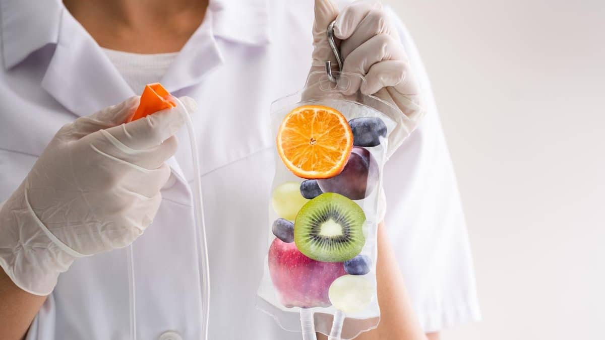

Зміцнення імунітету — крапельниця на дому
Застудилися і необхідно, щоб одужання пройшло швидше і без ускладнень? Вам допоможе крапельниця для імунітету .

Коли крапельниця для імунітету найефективніша?
Найкращий час для зміцнення імунітету — початок осені, після перенесених захворювань або в період епідемій. Вітаміни B, C, D3 працюють у комплексі.
- Відновлення після ГРВІ за 2-3 дні
- Підвищення енергетичного тонусу
- Зниження ризику застуд на 60%
Коли потрібна крапельниця для зміцнення імунітету?
Зміцнення імунітету — важлива складова здорового способу життя. Збалансоване харчування, фізичні навантаження та відсутність стресу — це основа, але досягти всього цього в сучасному світі непросто.
Тому для зміцнення імунітету доводиться вдаватися до додаткових лікувальних процедур. Однією з них є інфузійна терапія — внутрішньовенне введення вітамінів, мінералів та інших біологічно активних речовин.
Крапельниця для імунітету допомагає відновити сили за 1–2 сеанси, знижує ризик ускладнень після ГРВІ та підвищує енергетичний тонус.
Як ще називають цю процедуру
Пацієнти часто шукають цю послугу під назвами «капельница для иммунитета», «витаминная капельница» або «капельница от простуды» (російськомовні варіанти). У міжнародній практиці також використовують термін Immunity Boost IV Drip або Vitamin Infusion Therapy. Усі ці назви позначають ту саму внутрішньовенну інфузію з вітамінами B, C, D3 та мінералами. На нашому сайті ми дотримуємося української медичної термінології й називаємо її крапельниця для імунітету.
Як працює крапельниця для імунітету
Чому внутрішньовенне введення краще за таблетки
При пероральному прийомі значна частина вітамінів руйнується ферментами травного тракту або погано всмоктується через проблеми зі шлунком. Біодоступність вітаміну С із таблеток не перевищує 20%, а вітамін D3 без жирів майже не засвоюється. Внутрішньовенне краплинне введення дає 100 % дози безпосередньо в кровотік. Вітамін С швидко насичує лейкоцити та нейтрофіли, підвищуючи їхню фагоцитарну активність. Вітамін D3 модулює імунну відповідь, зменшуючи надмірне запалення. Вітаміни групи В слугують кофакторами для енергетичних процесів у клітинах, що особливо важливо при вірусних інтоксикаціях. Мінерали (K+, Mg2+, Ca2+) відновлюють електролітний баланс, який часто порушується при гарячці та пітливості. Такий комплекс працює швидше за будь-які пероральні добавки та не навантажує шлунок.
Як проходить процедура
Покроково: від дзвінка до зняття катетера
- Телефонна консультація. З'ясовуємо ваші симптоми, чи є температура, як довго хворієте, які ліки приймаєте.
- Огляд на місці. Вимірювання тиску, пульсу, сатурації, огляд горла та лімфовузлів (за потреби).
- Приготування розчину. В асептичних умовах готується інфузія: вітаміни B1, B6, B12, C 1000 мг, D3 15000 МО, збалансований електролітний розчин.
- Венепункція. Встановлюється стерильний периферичний катетер, мінімальний дискомфорт.
- Інфузія. Триває 25–30 хвилин, швидкість регулюється за самопочуттям.
- Завершення. Катетер видаляється, накладається пов'язка. Пацієнт отримує рекомендації і може одразу повертатися до справ.
Склад крапельниці для імунітету
- Розчин з іонами Na+, K+, Ca+, Mg+ — заповнить депо мінералів в організмі, що допоможе впоратися з поганим настроєм та головними болями.
- Вітаміни B1, B6, B12 — допоможуть відновити енергетичний рівень організму та впоратися з втомою.
- Вітамін C (підвищена доза 1000 мг) — має антиоксидантні та цитопротекторні властивості, захищає клітини від руйнувань, покращує імунну функцію, зменшує запалення.
- Вітамін D3 (бустер доза 15000 МО) — має імунопротекторні властивості, сприяє мінералізації кісток іонами Ca+.
1600 грн
Як працює кожен компонент
Вітамін С (аскорбінова кислота)
Підвищена доза (1000 мг) стимулює вироблення інтерферонів, посилює фагоцитоз нейтрофілів та макрофагів. Антиоксидантна дія захищає мембрани імунних клітин від пошкоджень вільними радикалами, які активно утворюються під час боротьби з вірусом. Вітамін С також зменшує рівень гістаміну, що знижує набряк слизових і полегшує дихання.
Вітамін D3 (холекальциферол)
Доза 15000 МО швидко підіймає сироватковий рівень 25(OH)D, необхідний для активації вродженого імунітету. Вітамін D3 стимулює синтез кателіцидину та дефензинів — антимікробних пептидів, що знищують бактерії та віруси на слизових. Він також модулює адаптивну імунну відповідь, запобігаючи надмірному запаленню при грипі та ГРВІ.
Вітаміни групи В (В1, В6, В12)
Тіамін (В1) необхідний для вуглеводного обміну і синтезу АТФ. Піридоксин (В6) бере участь у синтезі антитіл та проліферації лімфоцитів. Ціанокобаламін (В12) підтримує кровотворення, що важливо при анемії після тривалих хвороб. Комплекс також покращує провідність нервових імпульсів, зменшуючи «туман у голові».
Мінеральний комплекс (Na+, K+, Mg2+, Ca2+)
Збалансований електролітний розчин усуває зневоднення, яке часто супроводжує гарячку. Калій і магній нормалізують серцевий ритм, зменшують м'язову слабкість. Кальцій бере участь у передачі сигналів між імунними клітинами.
Кому підходить крапельниця для імунітету
Основні показання
- Часті застуди (більше 4 разів на рік), тривалий кашель після ГРВІ.
- Перенесений грип, вітрянка в дорослому віці — для прискорення відновлення.
- Сезонна профілактика (осінь, початок епідемій).
- Синдром хронічної втоми, зниження працездатності.
- Період реконвалесценції після будь-якого вірусного захворювання.
- Підготовка до планових операцій для підвищення опірності організму.
Процедура добре поєднується з крапельницею Детокс для глибшого очищення та з крапельницею Попелюшка для покращення стану шкіри.
Кому процедура не рекомендується (протипоказання)
Абсолютні та відносні обмеження
- Індивідуальна непереносимість будь-якого компонента.
- Гіперкальціємія, гіпервітаміноз D — через наявність високої дози D3.
- Тяжка ниркова недостатність (швидкість клубочкової фільтрації нижче 30 мл/хв).
- Сечокам'яна хвороба з оксалатними каменями — вітамін С підвищує ризик оксалатурії.
- Вагітність та період лактації.
- Вік до 18 років.
- Гостра серцева недостатність, набряк легень.
- Гострі психічні розлади, епілепсія (через можливу стимуляцію ЦНС вітамінами B).
Підготовка до процедури
- Не вживайте алкоголь за 24 години.
- Легко перекусіть за 1,5–2 години.
- Випийте 1–2 склянки води за 30 хвилин.
- Повідомте медпрацівника про всі ліки, які приймаєте.
Рекомендації після крапельниці
Як закріпити результат
- Пийте більше води протягом доби.
- Уникайте переохолодження, але не перегрівайтесь.
- Утримайтеся від алкоголю мінімум 24 години.
- Відпочивайте, не перенавантажуйте організм фізично.
Безпека процедури та можливі реакції
Що вважається нормою
Відчуття тепла, легке почервоніння обличчя, металевий присмак — короткочасні реакції на вітаміни. Небезпечні симптоми: висип, свербіж, набряк, утруднене дихання — вимагають негайної допомоги.
Чим крапельниця для імунітету відрізняється від інших
Порівняння з таблетками, чаями та імуностимуляторами
На відміну від пероральних добавок, вона має 100% біодоступність. На відміну від імуностимуляторів (інтерферонів), вона не втручається грубо в імунну відповідь, а лише дає клітинам ресурс для роботи. На відміну від звичайних крапельниць, спеціально скомбінована для імунної підтримки.
Що говорить доказова медицина
Дослідження показують, що вітамін С у дозах 1–2 г/добу скорочує тривалість ГРВІ на 8–14%. Вітамін D3 знижує ризик респіраторних інфекцій у людей з дефіцитом. Вітаміни групи В необхідні для нормального функціонування імунної системи, особливо при стресі. Проте крапельниця — це підтримка, а не лікування хвороби; вона не замінює противірусну терапію при тяжких формах грипу.
Експертна думка лікаря
Матеріал підготовлено та перевірено лікарем-терапевтом вищої категорії з 20-річним стажем роботи в інтенсивній терапії — Оленою Коваленко.
Зона обслуговування
Ми працюємо в м. Чорноморськ та області...
Відгуки

Часті запитання
Ні, ви нічого не купуєте. Ліки та витратні матеріали ми беремо на себе.
Крапельниця займає до 30 хвилин. Без подальшої реабілітації.
- — Індивідуальна непереносимість
- — Вік до 18 років
- — Вагітність та лактація
Ще поширені запитання
Профілактичний курс — 3–5 процедур з інтервалом 7 днів. Після перенесеного грипу чи ГРВІ зазвичай достатньо 2–3 крапельниць.
Так, з крапельницею «Детокс» для посилення детоксикації або з «Попелюшкою» для шкіри. Інтервал між різними складами — не менше 2–3 днів.
Так, вона не замінює противірусне лікування, але значно зменшує симптоми інтоксикації, прискорює одужання та знижує ризик ускладнень.
Так, багато пацієнтів роблять профілактичний курс на початку осені або перед сезоном застуд. Це дозволяє зменшити частоту ГРВІ та легше переносити вірусні захворювання.
Так, вітаміни групи В та мінерали, що входять до складу, покращують енергетичний обмін, зменшують відчуття втоми та підвищують працездатність.
Поліпшення самопочуття зазвичай відчувається вже через кілька годин після першої процедури. Повноцінний імуностимулюючий ефект розвивається після 3–4 сеансів.
При високій температурі (вище 38°C) крапельницю краще відкласти. При залишкових явищах або на початку захворювання процедура дозволена і навіть рекомендована.
Так, процедуру виконує дипломована медсестра/фельдшер з досвідом роботи в реанімації. Усі препарати сертифіковані, використовуються одноразові стерильні системи.
Рецепт не потрібен, але обов'язкова попередня консультація нашого медпрацівника для оцінки стану здоров'я.
Не рекомендується протягом 24 годин. Алкоголь нейтралізує дію вітамінів групи В та підвищує навантаження на печінку.
Для пацієнтів старше 60 років або з хронічними захворюваннями потрібна консультація лікаря. Загалом процедура добре переноситься в будь-якому віці.
При контрольованій гіпертонії (до 160/100) процедура безпечна. Медпрацівник обов'язково вимірює тиск перед початком.
Усе залежить від конкретного алергену. При алергії на будь-який із компонентів процедура протипоказана. Медпрацівник збирає детальний алергологічний анамнез.
Так, може полегшити перебіг, зменшити інтоксикацію та прискорити загоєння висипань завдяки вітаміну С. Призначається тільки після огляду.
Через місяць після завершення курсу планування безпечне. Під час вагітності процедура заборонена.
Про компанію MobiMedx
MobiMedx — це компанія молодих, але досвідчених фахівців. Наші лікарі та медсестри мають значний досвід роботи на екстреній медичній допомозі, в реанімації та в терапевтичних відділеннях.
Ми є мультифункціональною командою із залученням різних фахівців. Також ми тісно співпрацюємо з косметологами для надання якісних процедур краси та омолодження. Для вашого комфорту ми працюємо під ключ: привозимо всі ліки та витратні матеріали з собою.